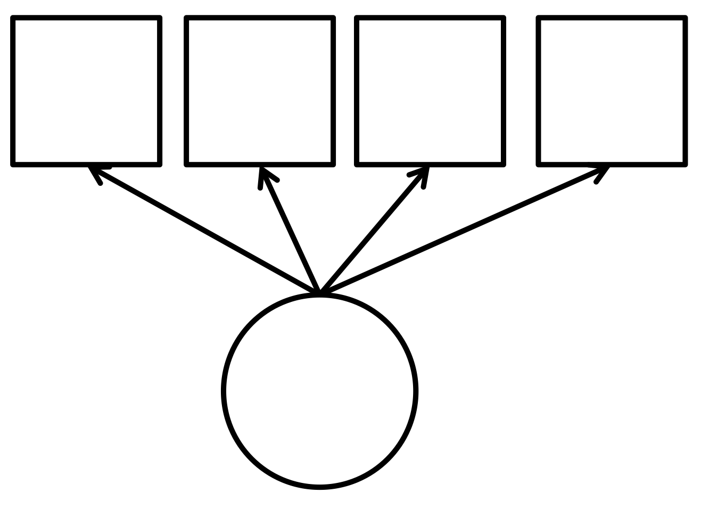
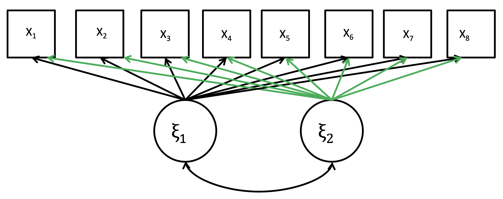
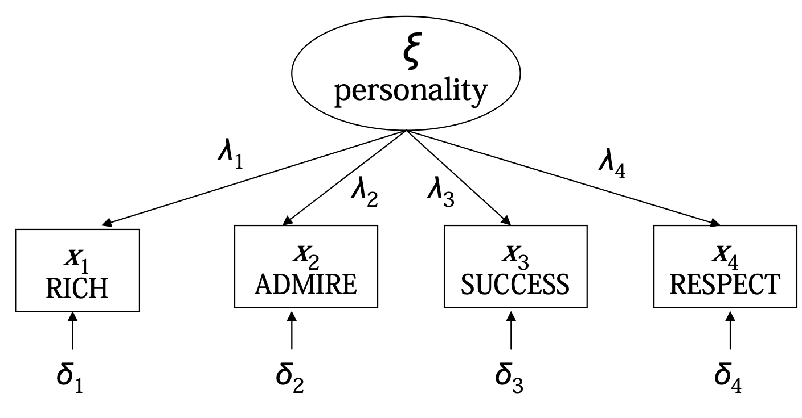
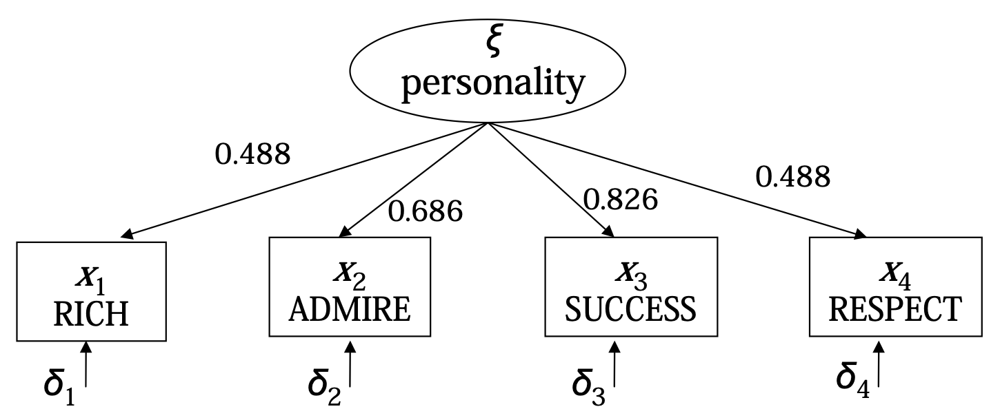
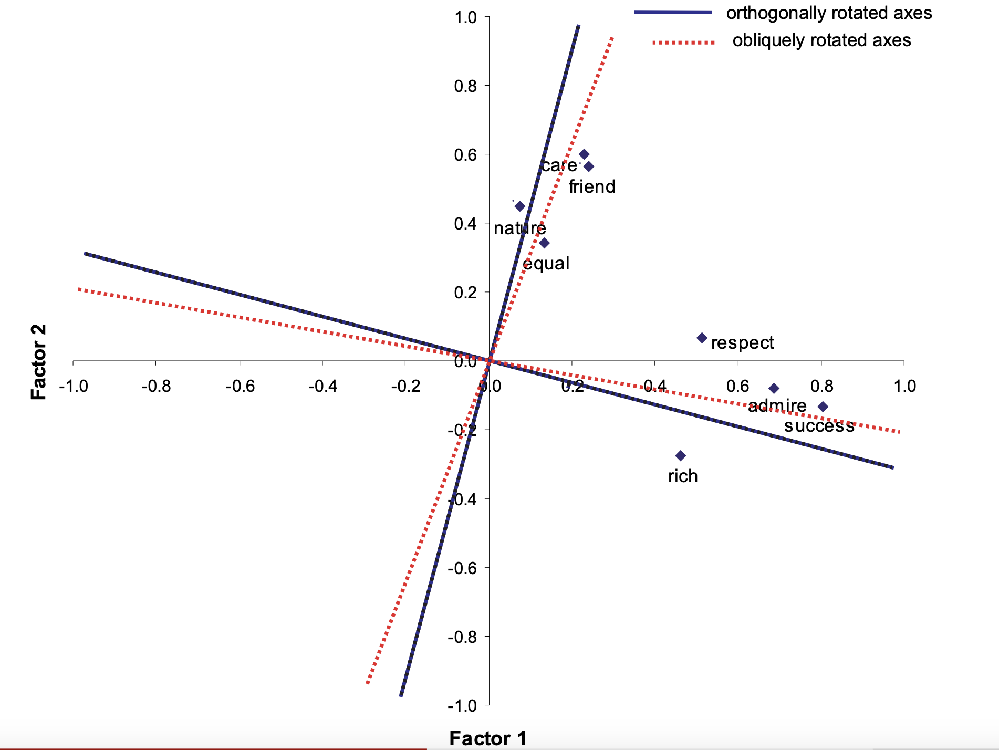

library(psych)
library(GPArotation)PCA, as we discussed in the last chapter, is essentially an algorithm based method of dimensional reduction. In this chapter, we will discuss Factor Analysis, a model-based method. These models specify some probability model that represents an approximation of the data-generating process, that allow us to model latent variables.
Factor Analysis
Factor Analysis Models
Factor Analysis models are Latent Variable Models, with a few characteristics:
Explanation of Latent Variables
A latent variable is a variable that is not observed. Instead, we observe several variables that are indicators of the latent variable.
A measurement model represents how the observed indicators measure the true concept of interest, the latent variable.

An example of latent variables is the measurement of personality traits.
We can measure personality traits by asking survey respondents many different questions, and asking them to respond on a scale of 0-10 on each question.
But, these answers to the questions are all measuring one latent variable - the personality.
- All observed indicator variables (items) and latent variables (factors) are treated as continuous variables.
- All distributions of the variables are specified as normal distributions.
- All the observed variables (items) are treated as measures of latent variables.
- The latent variables (factors) are on an equal footing with each other - associations between factors are represented with correlations.
We can decide how many factors we need to properly measure the latent variables. We can assign predictions (factor scores) of the latent variable to create constructs of the latent variable to use in statistical analysis.
Example of Factor Analysis
Below is a model of a factor analysis with 2 factors that are correlated (double sided arrow).

Exploratory and Confirmatory Analysis
There are two types of factor analysis: Exploratory factor analysis and confirmatory factor analysis.
Exploratory factor analysis (EFA):
- We do not assume any number of factors, or what the factor pattern will look like.
- Our aim is to find the smallest number of interpretable factors needed to explain the correlations between the observed items.
- Models have minimum number of constraints on model parameters.
Confirmatory factor analysis (CFA):
- Models have more than the minimum number of parameter constraints.
- Can be used to study how well hypothesized measurement models fit the data.
One-Factor EFA
Model Specification
We denote the single latent factor (common factor) with \xi. This latent variable is normally distributed with mean k and variance \phi:
\xi \sim \mathcal N(k, \phi)
We denote our observed indicator variables (items) by x_1, \dots, x_p. Each item x_i is related to the latent factor \xi with a linear regression model:
x_i = \tau_i + \lambda_i \xi + \delta_i
\lambda_i is the slope, also called the factor loadings, which determine the associations between \xi and x_i. \delta_i is the error term, called the unique factors.

Assumptions and Identification
There are several assumptions that the exploratory factor analysis model makes:
- Error term \delta_i is normally distributed with a mean of 0: \delta_i \sim \mathcal N(0, \theta_{ii}). The variance \theta_{ii} depends on which factor x_i we are using.
- Error terms \delta_1, \dots, \delta_p are uncorrelated with each other. This implies that correlations between the items, are entirely explained by the factor. In other words, all x_i are conditionally independent given \xi.
- Factor \xi is uncorrelated with the error terms \delta_i.
There is also an issue of unique identification. This is because many different values of k, \phi, \tau_i, \lambda_i can give the same observed means, variances, and covariances of the items x_1, \dots, x_n.
Thus, we need to fix k and \phi of \xi \sim \mathcal N(k, \phi) by assumption. The standard assumption is k = 0 and \phi =1, so \xi \sim \mathcal N(0, 1). This makes \xi take a standard normal distribution.
Other Choices of Assumption
We can also, instead of assuming k and \phi in \xi \sim \mathcal N(k, \phi), we can instead assume the size of \tau_i and \lambda_i. This also allows for a unique identification of the model.
The most common assumption is to choose one item (generally x_1), and set \tau_1 = 0 and \lambda = 1. Since x_1 is normally distributed, this implies that x_i \sim \mathcal N(k, \phi + \theta_{11}).
Estimation Process
We know that our latent factor \xi \sim \mathcal N(k, \phi).
We know that x_i is related to \xi by x_i = \tau_i + \lambda_i \xi + \delta_i, a linear regression. Thus, E(x_i|\xi) = \tau_i + \lambda_i \xi. Since x_i is also normally distributed, we can say x_i \sim \mathcal N(\tau_i + \lambda_i \xi, \ \lambda_i^2\phi +\theta_{ii}).
We can construct a theoretical covariance matrix of all the items x_1, \dots x_p, where the diagonals are the variances:
\begin{pmatrix} Var(x_1) = \lambda_1^2\phi + \theta_{11} & Cov(x_1, x_2) = \lambda_1\phi\lambda_2 & \dots & Cov(x_1, x_p) = \lambda_1\phi\lambda_p \\ Cov(x_2, x_1) = \lambda_2\phi\lambda_1 & Var(x_2) = \lambda_2^2 \phi + \theta_{22}& \dots & Cov(x_2, x_p) = \lambda_1\phi\lambda_p \\ \dots & \dots & \ddots & \vdots \\ Cov(x_p, x_1) = \lambda_p\phi\lambda_1 & Cov(x_p, x_2) = \lambda_p\phi\lambda_2 & \dots & Var(x_p) = \lambda_p^2 \phi + \theta_{pp} \end{pmatrix}
If we fix \xi \sim \mathcal N(0, 1), that implies \phi = 1. This allows us to simplify the above theoretical covariance matrix.
The estimation process is to find the values of \lambda_i and \theta_{ii}, that make the above hypothetical covariance matrix, as close as possible to our observed covariance matrix from our sample with x_1, \dots, x_p. This is generally done with maximum likelihood estimation.
Interpretation of Factor Loadings
The estimated factor loading, \widehat{\lambda_i}, is the estimated covariance between the observed item x_i, and the latent factor \xi. If item x_i has been standardised to a standard normal distribution, \widehat{\lambda_i} is also the correlation between x_i and \xi.
Additional Note on Multiple Factors
When there are two or more factors, these interpretations of \widehat{\lambda_i} only hold if the multiple factors are uncorrelated.
For correlated factors, the covariances and correlations between the factors are still dependent on \widehat{\lambda_i}, but they need to be calculated with an additional calculation.
Interpretation of a factor \xi is based on the items x_i that have large (positive or negative) loadings \widehat{\lambda_i} on the factor \xi. For example, take this example below:

We can see all the items are positively correlated with the factor. Thus, we could interpret the personality factor \xi as a measure of status/power-oriented personality. We can see that admire and success carry larger weights (more important for the factor), while rich and respect carry less weight.
Rotation of Factors
In a one-factor model, the direction of the factor \xi is not identified, so it can be chosen freely.
For example, we can change the sign of the values of the factors from \xi to -\xi.
Rotating the factors would simply inverse the signs of the loading from \lambda_i to -\lambda_i.
Communality and Reliability
When we set our model such that \xi \sim \mathcal N(0, 1), the model implies that the variances of the observed items is:
Var(x_i) = \lambda_i^2 + \theta_{ii}
\lambda_i^2 is the part of the variance of x_i explained by the common factor \xi, known as the communality of x_i. \theta_{ii} is the residual variance, also called the specific variance.
The proportion \lambda_i^2/ (\lambda_i^2 + \theta_{ii}) is called the reliability of x_i. It is the R^2 of the measurement model for x_i on \xi.
When all x_i are standardised to have a variance Var(x_i) = 1, then the communality \lambda_i^2 is equal to the reliability: \lambda_i^2 = 1 - \theta_{ii}.
The mean of all the communalities of each item x_1, \dots, x_p is the proportion of total variance of all the items explained by the common factor \xi.
Factor Scores
Once we have estimated the factor analysis model, we can then use x_1, \dots, x_k values for a individual, and predict their latent variable values \xi, called factor scores. These are calculated as a linear combination of the observed items:
\tilde\xi = w_0 + w_1x_1 + w_2x+2 + \dots + w_px_p
The coefficients w_1, \dots w_p depend on the model parameters. Coefficients w_i are highest for items x_i which are the strongest measures of \xi according to the model.
w_0 is the intercept. w_0 = 0 if both \xi has a mean of 0, and all x_i are standardised (to a standard normal distribution \mathcal N(0, 1)) to have a mean of 0.
Multiple Factor EFA
Model Specification
We can have a model with q number of latent factors \boldsymbol\xi = (\xi_1, \dots, \xi_q). The model for the distribution of vector \boldsymbol\xi is:
\boldsymbol\xi \sim \mathcal N(\boldsymbol k, \boldsymbol\Phi)
Where \boldsymbol k = (E(\xi_1), \dots, E(\xi_q)), and \boldsymbol\Phi is a matrix with diagonal elements being variances Var(\xi_j) = \phi_{jj}, and other elements being covariances Cov(\xi_j, \xi_k) = \phi_{jk}.
Now, the measurement model of how x_i is related to each factor \xi_j is as follows:
x_i = \tau_i + \lambda_{i1} \xi_1 + \lambda_{i2} \xi_2 + \dots + \lambda_{iq} \xi_q + \delta_i
The assumptions remain the same from the first model:
- Error term \delta_i is normally distributed with a mean of 0: \delta_i \sim \mathcal N(0, \theta_{ii}). The variance \theta_{ii} depends on which factor x_i we are using.
- Error terms \delta_{1j}, \dots, \delta_{pj} are uncorrelated with each other. This implies that correlations between the items, are entirely explained by the factor. In other words, all x_i are conditionally independent given \xi_j.
- All factors \xi_j is uncorrelated with the error terms \delta_i.
Model Identification
For a given number of items p, you must have a sufficiently small number of factors q. Generally, the maximum amount of factors q is given by:
df = \frac{(p-q)^2 - (p+q)}{2} ≥ 0
As in the 1-factor model, we need to specify the scales of the factors. The most conventional way is to set all means of all factors \xi_j to 0, k_j = 0, and set all variances of all factors \xi_j to 1, \phi_{jj} = 1.
None of these fixes the covariances Cov(\xi_j, \xi_k) = \phi_{jk}, so these covariances are parameters that we need to estimate.
The Heywood Case
Even when the model is formally identified, the number of factors q can be “too large”.
The Heywood Case is the name of an estimated variance of x_i, \theta_{ii}, which is 0 or even negative for some observed variable x_i.
It is possible that this means that x_i is a perfect measure of the factors \xi_j. However, it is far more likely that this indicates that the model has too many factors .
The best way to deal with this is to fit the model with one fewer factor. You can also use a confirmatory factor analysis model which sets some loadings to 0.
Factor Rotation
Choosing the scale of the latent factors does not fully resolve their identification. This is because there are actually infinitely many rotations of our latent factors, that all produce the same fit.
Details on the Rotation Identification Issue
Suppose we start with two factors, \xi_1 and \xi_2. Let us transform them to 2 new factors with some linear combinations with coefficients a:
\begin{split} & \xi_1^* = a_{11}\xi_1 + a_{12}\xi_2 \\ & \xi_2^* = a_{21} \xi_1 + a_{22} \xi_2 \end{split}
This transformation can be interpreted as a rotation (change in coordinate axes) of the space of these factors. Both pairs (\xi_1, \xi_2) and (\xi_1^*, \xi_2^*) both produce the exactly same fit for the observed items. Thus, this causes a unique identification issue.
In fact, any choice of coefficients a (there are infinitely many of them) will produce the same model fit.
Generally, we choose the rotation based on the interpretability of the resulting factors. Interpretation is easiest when each factor has high loadings for some variables, and small (near 0) loadings for all the rest. This allows us to clearly identify what each factor is representing.
Orthogonal factors (perpendicular to each other in vector space) imply that the factors are uncorrelated. However, some rotations can be obliquerotations, which allow the factors to be correlated.
Visualisation of Orthogonal and Oblique Rotations
The below illustrates orthogonal and oblique rotations of factors:

We can see that the obliquely rotated axes are not exactly perpendicular to each other.
If the main goal of analysis is interpretation, we generally want to use an oblique rotation, as they are easier to interpret. This also shows if there are correlations between the factors.
For data reduction purposes, the orthogonal rotation can be useful, as it avoids multicollinearity.
Factor Interpretation
Interpretation is very similar to the one-factor models.
Interpretation of a factor \xi is based on the items x_i that have large (positive or negative) loadings \widehat{\lambda_{ij}} on the factor \xi.
When there are two or more factors, these interpretations of \widehat{\lambda_{ij}} (which were the covariance between x_i and \xi_j) only hold if the multiple factors are uncorrelated.
For correlated factors, the covariances and correlations between the factors are still dependent on \widehat{\lambda_i}, but they are not exactly the value of \widehat{\lambda_i}.
We can still calculate our factor scores as before.
\tilde\xi_j = w_{0j} + w_{1j}x_1 + w_{2j}x+2 + \dots + w_{pj}x_p
Implementation in R
For exploratory factor analysis, you will need the package psych and GPArotation:
Before starting factor analysis, you want a dataset with only complete observations (no NA’s) for the variables you are items for factor analysis:
no_na <- apply(mydata, 1, FUN=function(x){all(!is.na(x))})
mydata <- mydata[no_na,]Also subset the data so that only the items you want to use are in the dataframe.
EFA with One Factor
We can use the fa() command to conduct factor analysis:
fa_object <- fa(mydata, nfactors=1, fm="ml")
print(fa_object)The output provides
EFA with Two Factors
We can use the fa() command to conduct factor anlaysis.
For a non-rotated (orthogonal) rotation, the code is as follows:
fa_object <- fa(mydata, nfactors=1, fm="ml", rotate = "none")
print(fa_object)For a oblique rotation, the code is as follows:
fa_object <- fa(mydata, nfactors=1, fm="ml", rotate = "oblimin")
print(fa_object)The output provides a table of the loadings \lambda_i for each item. ML1 represents the first factor \xi_1, and ML2 represents the second factor \xi_2, and so on…
For the oblique rotation, there is also a table of correlations between all the factors \xi_j.
Factor Scores
To calculate factor scores, we can extract them from the fa_object in which we stored our factor analysis.
fa_object$scoresThis will give you a table, with the rows being different units in the data, and the columns being different factor scores for each factor.
If you are wanting to just view the scores, it is recommended to subset the data if you have too many observations:
fa_object$scores[1:10,] #first 10 unitsYou can also subset the number of factors (although if you don’t need extra factors, you would just specify less when estimating):
pca_object$scores[,1:2] #first 2 factors